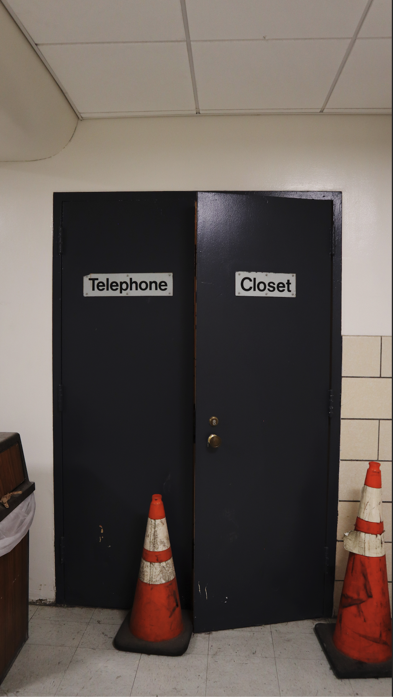
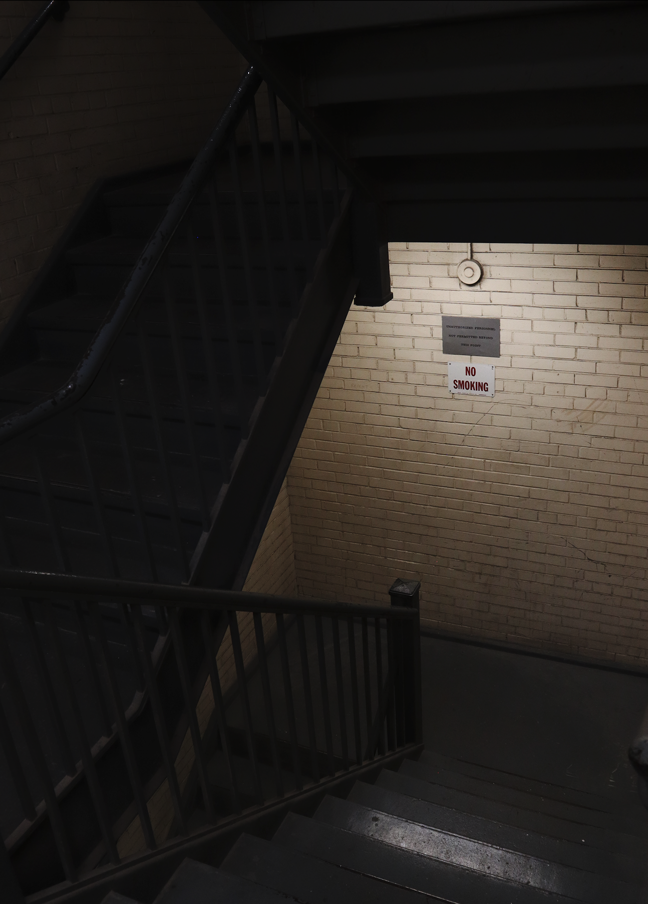

These are the edited files. Original files linked below.
 
I've always been drawn to signage and mundane looking spaces. My contrast preference varies based on the emotion I'm trying to evoke or how easily I want the photo to be read. The first image here has quite a low contrast, because that felt accurate to the 'emotion' of the scene. The second image is much higher in contrast, to guide the viewer's eyes to the sign.
Home